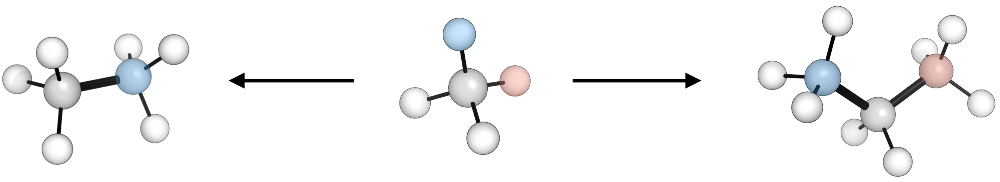
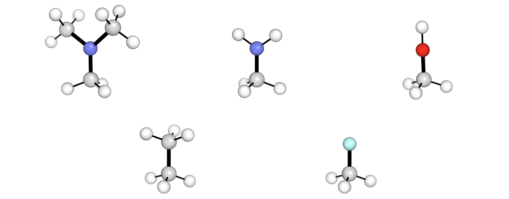

Molecular Manipulation
Contents
Molecular Manipulation¶
autodE provides some simple methods for molecular manipulation and more functionality when combined with molfunc.
Fragmentation¶
From a molecular graph representation of a molecule its fragmentation is relatively straightforward. For example, to fragment methane to CH3• + H•
>>> import autode as ade
>>> methane = ade.Molecule(smiles='C')
>>> [atom.atomic_symbol for atom in methane.atoms]
['C', 'H', 'H', 'H', 'H']
>>> from autode.mol_graphs import split_mol_across_bond
>>> ch3_nodes, h_nodes = split_mol_across_bond(methane.graph, bond=(0, 1))
>>> ch3 = ade.Molecule(name='CH3', mult=2, atoms=[methane.atoms[i] for i in ch3_nodes])
>>> ch3.atoms
Atoms(n_atoms=4, [Atom(C, 0.0009, 0.0041, -0.0202),
Atom(H, -0.4585, 0.9752, -0.3061),
Atom(H, 0.0853, -0.0253, 1.0804),
Atom(H, 1.0300, -0.1058, -0.4327)])
>>> h = ade.Molecule(name='H', mult=2, atoms=[methane.atoms[i] for i in h_nodes])
>>> h.atoms
Atoms(n_atoms=1, [Atom(H, -0.6577, -0.8481, -0.3214)])
Functionalisation¶
Swapping fragments on a structure (e.g. H → Me) can be achieved using SMILES concatenation. For example to stitch two methyl fragments to generate an ethane molecule
>>> ethane = ade.Molecule(name='C2H6', smiles='C%99.C%99')
>>> ethane.n_atoms
8
Multiple fragments can be added to the same core by specifying multiple sites on a single atom
>>> propane = ade.Molecule(name='C3H8', smiles='C%99%98.C%99.C%98')
>>> propane.n_atoms
11
This method regenerates the whole structure which may not be desirable if the molecule is a transition state (TS) or a particular conformation of interest.
molfunc¶
Adding a fragment to a fixed core structure can be achieved with
molfunc and can be installed
with: pip install molfunc. molfunc requires a xyz file to
initialise a molecule and indexes atoms from 1 so that atom 2 is the first
hydrogen atom in methane
>>> from molfunc import CoreMolecule, CombinedMolecule
>>> methane.print_xyz_file()
>>> methane_core = CoreMolecule(xyz_filename='CH4.xyz', atoms_to_del=[2])
>>> ethane = CombinedMolecule(methane_core, frag_smiles='C[*]', name='C2H6')
>>> ethane.n_atoms
8
A set of fragments can be iterated through using molfunc to generate a library rapidly e.g.
from molfunc import CoreMolecule, CombinedMolecule
fragments = {'NMe2': 'CN([Fr])C',
'NH2': 'N[Fr]',
'OH': 'O[Fr]',
'Me': 'C[Fr]',
'F': 'F[Fr]'}
methane = CoreMolecule(xyz_filename='CH4.xyz', atoms_to_del=[2])
for name, smiles in fragments.items():
combined = CombinedMolecule(core_mol=methane,
frag_smiles=smiles,
name=f'CH3_{name}')
combined.print_xyz_file()
Out (visualised):
